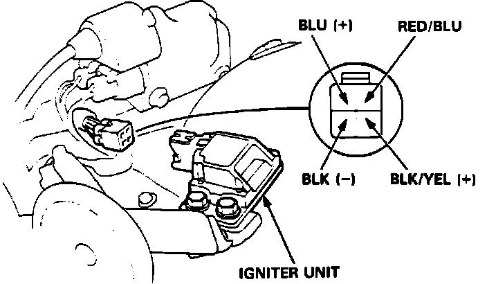
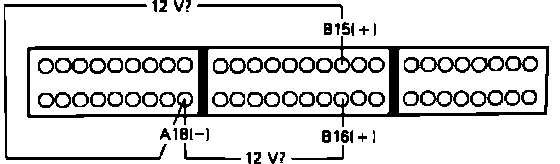

DTC 15
Code 15 indicates a problem in the igniter or igniter circuit.1. Remove Alternator Sense fuse in underhood relay box for 10 seconds to reset ECU.
2. Turn ignition on and observe diagnostic LED.
Flashes code 15, proceed to step 4.
Does not flash, proceed to next step.
3. Malfunction is intermittent. Check connections at igniter and ECU. End of test.
Ignition Output Signal (Igniter) Testing:

4. With ignition off, disconnect igniter electrical connector.
5. Turn ignition on.
6. Measure voltage between BLK/YEL wire and ground.
Battery voltage, proceed to step 8.
No battery voltage, proceed to next step.
7. Repair open in BLK/YEL wire between igniter and ignition switch. End of test.
8. With ignition off, install test harness between ECU and harness connector. If test harness is not available, carefully backprobe wires at ECU connector.
9. Reconnect igniter electrical connection and turn the ignition switch on.
Ignition Output Signal (Igniter) Testing:

10. Measure voltage individually between terminals B15, B16 and A18 as shown.
Battery voltage, replace electronic control unit. End of test.
No battery voltage, proceed to next step.
11. With ignition off, disconnect igniter connector and remove connector B from the ECU.
12. Check for continuity to RED/BLU igniter wire from ECU terminals B15 and B16.
Continuity, proceed to step 14.
No continuity, proceed to next step.
13. Repair open RED/BLU wire between ECU terminals B15, B16 and igniter unit.
14. Check for continuity to ground on igniter RED/BLU wire.
Continuity, proceed to next step.
No continuity, replace igniter unit. End of test.
15. Repair short to ground in RED/BLU wire between igniter and ECU terminals B15 and B16. Replace igniter unit (if RED/BLU wire was shorted to ground for any length of time the igniter unit will be damaged and require replacement).